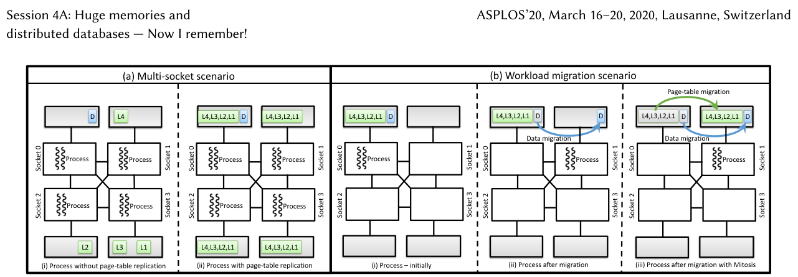
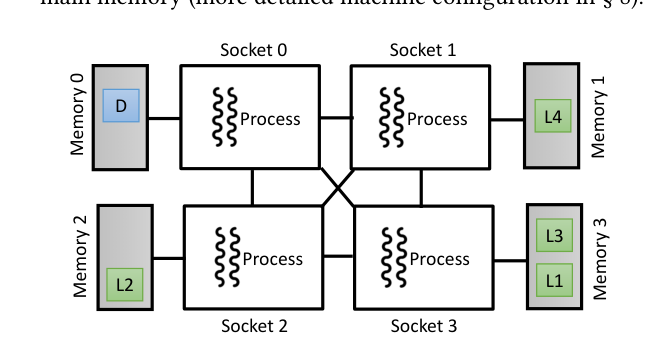
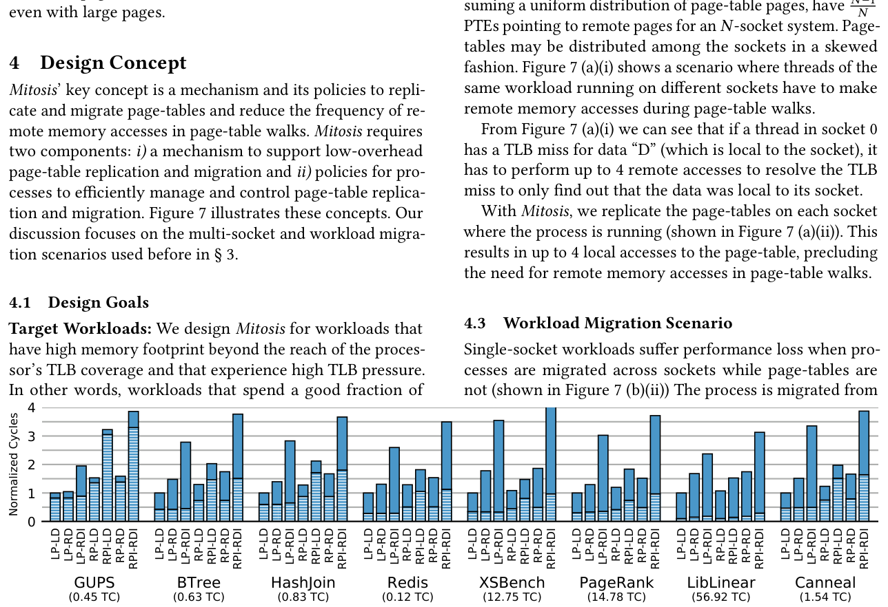
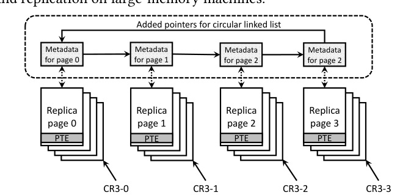
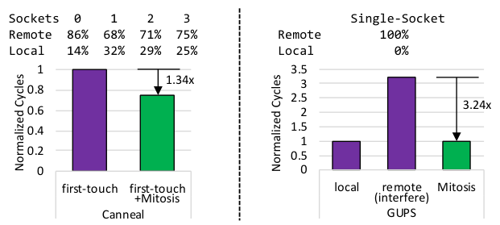
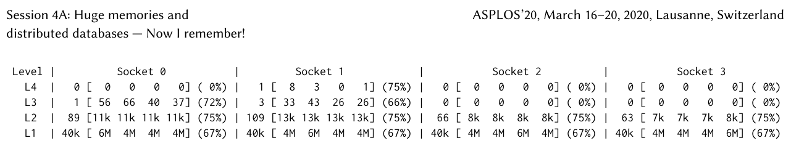
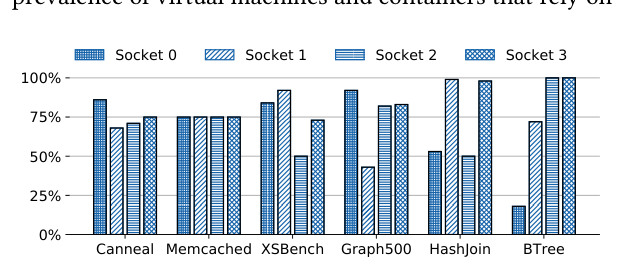
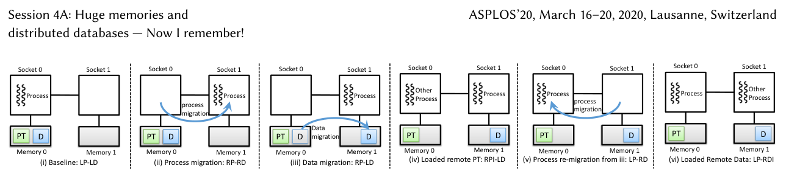
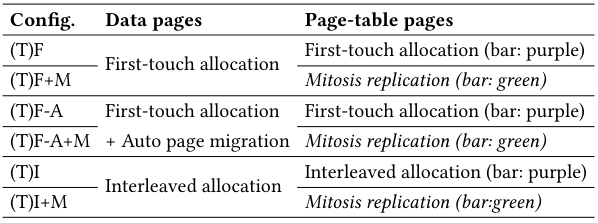
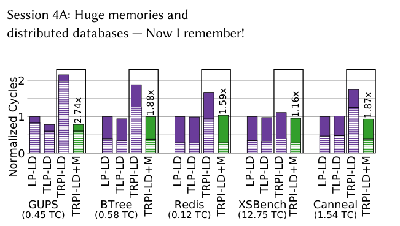

Mitosis: Transparently Self-Replicating Page-Tables for Large-Memory Machines
This page was written by an AI model to give a high-level overview of the paper. Please check the paper for detail: ACM Digital Library.
As server DRAM capacities grow into the 1 to 100 TB range on multi-socket machines, TLB coverage is not keeping pace. Memory-intensive workloads increasingly miss in the TLB and must walk the page table, which costs up to four memory accesses on x86-64 (soon five, with Intel's upcoming 5-level paging) and up to 24 under virtualization's two-dimensional page walks. On a NUMA machine, any of those accesses can land on a remote socket, which the paper's own four-socket test machine measures at roughly 580 cycles and 11 GB/s versus 280 cycles and 28 GB/s for a local access. Decades of research have optimized where an application's data lives across sockets. Nobody had asked the same question about where its page tables live.
Linux's existing NUMA machinery, first-touch and interleaved allocation, AutoNUMA migration, Carrefour-style replication, only ever targets data pages. Page-table pages are allocated the same way ordinary data is, on whatever socket first touches the corresponding virtual memory, and then never move again, even while AutoNUMA actively migrates the data pages they map. The paper's own page-table dumps show the consequence directly: a single root page-table page sits on one socket while lower levels fan out across all four, so a TLB miss serviced on one socket routinely has to walk through DRAM on two or three others. Prior virtual-memory research on huge pages, MMU caches, translation prefetching and speculation was all done on single-socket systems and never considered this skew.
Mitosis's key idea is that page tables deserve the same NUMA-aware treatment as data, but they cannot be replicated the way data pages are, by simple bytewise copying, because the pointers inside non-leaf page-table levels are physical addresses that must differ from replica to replica while still forming a correct tree. Mitosis gives every socket on which a process runs its own copy of that process's page table, keeps the copies consistent on every update, and has each core walk only its local socket's copy on a TLB miss. The same replication machinery, pointed at a new socket and with the old copy freed, gives Mitosis page-table migration, something no existing OS NUMA policy provides even though it already migrates data.
Mechanically, Mitosis hooks into Linux's existing PV-Ops paravirtualization interface, the layer that already intercepts every page-table allocation, write and CR3 load, so it needs no rewrite of the memory subsystem. Allocation requests a copy on each socket in a per-process replication set (settable through extensions to libnuma/numactl); every write to one replica is eagerly propagated to the others via a circular linked list threaded through each page's kernel metadata, which keeps propagation to 2N rather than 4N memory accesses for N-way replication on x86-64; and at every context switch Mitosis loads the local socket's replica pointer into CR3. Hardware-set accessed and dirty bits, which bypass the normal software update path, are handled by reading and logically OR-ing them across all replicas.
On a real four-socket Intel Xeon E7-4850v3 with 512 GB of memory, Mitosis improves six large multi-socket, multi-threaded workloads by up to 1.34x through replication, at a measured memory overhead of just 0.6% on that machine, and never slows any tested configuration down. In a workload-migration scenario, where Linux already migrates a process's data but currently leaves its page table behind, misplaced page tables alone can cost over 3x; Mitosis's page-table migration recovers up to 3.24x on the worst case (GUPS) and matches locally-placed baseline performance, with end-to-end overhead under 0.5% when enabled on a workload it does not help.

Key takeaways
- Page-table placement, not just data placement, matters on multi-socket NUMA machines: a TLB miss triggers a page-table walk, and every hop in that walk can land on a remote socket.
- Measured on a real 4-socket, 512 GB Xeon machine, up to 86 to 99% of leaf page-table entries are remote from some sockets under ordinary first-touch allocation, and existing Linux NUMA policies (AutoNUMA, interleaving) never relocate page-table pages even though they migrate data pages.
- Mitosis replicates a process's page table across the sockets it runs on, and migrates it when the process moves, keeping replicas consistent via Linux's existing PV-Ops interface with no application changes and no new hardware.
- Replication improves multi-socket workloads by up to 1.34x at 0.6% measured memory overhead; migrating the page table along with the data on a socket migration recovers up to 3.24x versus leaving the page table behind.
- Mitosis's policy is currently a static, per-process or system-wide on/off switch (or fixed socket); automatic, TLB-miss-counter-driven triggering is explicitly left to future work.
From a socket-blind page table to self-replicating page tables
Why page-table walks are expensive, how badly NUMA misplaces them today, and how Mitosis replicates, migrates and governs page-table copies in Linux.
1 · Why page-table walks are expensive in the first place
x86-64 uses a 4-level radix-tree page table. A TLB miss triggers a hardware or software page-table walk that can require up to four memory accesses, one per level, before the translation is found. Intel's forthcoming 5-level paging (to extend the virtual address space) adds a fifth. Virtualized systems are worse: a guest's virtual-to-physical translation also needs the host's nested page table, so a miss can require a two-dimensional walk of up to 24 memory accesses instead of four. Published measurements already put address-translation overhead at 10 to 40% for many workloads, and the paper notes this will only worsen as TLB coverage falls further behind growing memory sizes.
2 · Why NUMA makes it worse, and why nobody had looked at page tables specifically
On a multi-socket machine, accessing memory on a remote socket costs more latency and less bandwidth than a local access, 2 to 4x higher latency is typical, and the paper's own machine measures roughly 580 cycles/11 GB/s remote versus 280 cycles/28 GB/s local. Linux and prior research address this for data: first-touch allocation, interleaved allocation, AutoNUMA page migration, and research systems like Carrefour that additionally replicate hot data pages across sockets. None of this machinery considers page-table pages, which are allocated through the same code path as data but, unlike data, are never migrated by AutoNUMA once placed.
3 · The multi-socket scenario: page tables scatter across sockets by construction
The authors built a kernel module that dumps a running process's page table and classifies every valid PTE at every level as pointing locally or remotely. Running this against Memcached, Graph500, HashJoin, Canneal, XSBench and BTree (32 to 455 GB working sets, see Table 1 in the paper) under ordinary first-touch allocation reveals a mechanical cause: a page-table page is allocated on whichever socket's thread first touches one of its 512 entries, so later entries written by threads on other sockets become remote references. With first-touch, page-table pages skew heavily toward one socket (the socket that happened to initialize memory first, often in single-threaded OpenMP-style initialization); with interleaved allocation, page-table pages are spread round-robin and a uniform N-1/N fraction of entries become remote on an N-socket system.

4 · The workload-migration scenario: data moves, page tables do not
The second scenario is a process migrated from one socket to another, which happens routinely in consolidated cloud deployments (the paper cites VMware ESXi migrating processes as often as every 2 seconds). Linux's NUMA balancer migrates the process's data pages to the new socket, but it has no mechanism to migrate page-table pages, which simply stay behind. To isolate the cost, the authors built seven controlled configurations (Table 2) varying page-table placement, data placement, and whether a bandwidth-hungry STREAM process co-locates on the remote socket to simulate contention. With everything local (LP-LD) as the baseline, remote data alone (LP-RD) costs about 3x; remote page-tables alone (RP-LD) cost about 3.3x, worse than remote data despite page tables occupying far less memory; and remote page-tables plus remote data (RP-RD) cost up to 3.6x, the worst case. Across all eight workloads tested, up to 90% of total execution cycles can be spent walking page-tables. Switching to 2 MB large pages reduces the walk to three memory accesses and lowers the share of time spent walking, but remote page-table placement remains costly even then.

| Configuration | Page-table (PT) | Data (D) | Interference |
|---|---|---|---|
| LP-LD | Local | Local | None (baseline) |
| LP-RD / LP-RDI | Local | Remote | None / on remote data |
| RP-LD / RPI-LD | Remote | Local | None / on remote PT |
| RP-RD / RPI-RDI | Remote | Remote | None / on PT and data |
5 · Design concept: replicate for multi-socket, migrate for workload movement
Mitosis targets exactly the two scenarios above with one mechanism. For multi-socket workloads, it replicates the page table on every socket the process runs on, so a TLB miss serviced on any socket walks a locally-resident copy. For workload migration, it reuses the same replication machinery to create a copy on the destination socket and retire the old one, so a migrated process's page-table walks become local again, just like its data already does. Mitosis is designed to activate selectively: it targets long-running, high-TLB-pressure workloads, and the authors explicitly avoid applying it to short-running or low-memory-footprint tasks, where the cost of replication cannot be amortized.
6 · Mechanism: allocating memory for replicas
- Every page-table allocation already goes through a page fault handler in Linux; Mitosis extends that handler to accept a list of target sockets and allocate a replica on each.
- Because allocation is strict (it must happen on specific sockets), it can fail if a socket is out of memory. Mitosis's prototype reserves pages in advance using a per-socket page-cache, sized via a sysctl, and returns an out-of-memory error if that cache is exhausted. The paper leaves more dynamic approaches (e.g., page stealing) to future work.
7 · Mechanism: keeping replicas consistent
OSes already mediate all page-table modifications through a controlled interface (map/unmap/protect) rather than letting applications write page tables directly. Mitosis extends that same interface so that every update is eagerly propagated to all replicas. Naively, finding the physical location to update in each of N replicas requires walking all N page tables, costing 4N memory accesses on an N-socket system. Mitosis instead threads a circular linked list through the kernel's per-page metadata (struct page) connecting every physical page to its replicas at the other sockets, cutting the cost to 2N memory accesses: N to update each replica and N to follow the pointer to the next one.

The Linux implementation reuses the kernel's existing PV-Ops interface, originally built to support paravirtualized hypervisors like Xen, which already intercepts every write_cr3, page-table allocation/release, and PTE write. Mitosis adds itself as a new PV-Ops backend, so when its replication bitmask is empty the behavior is identical to native Linux.
8 · Mechanism: using the right replica, and hardware-written bits
At every context switch, Mitosis loads the local socket's replica address (rather than a single shared root) into the page-table base register, by maintaining a per-process array of root pointers indexed by socket id; with a single page table, every entry in that array simply points to the same root, reproducing native behavior exactly. A separate problem is that x86 hardware itself writes the accessed and dirty bits in PTEs on a TLB miss and on a write, bypassing the normal software update path entirely. Since these bits cannot be replicated by intercepting software writes, Mitosis instead reads all replicas whenever accessed/dirty state is needed and logically ORs the bits together to produce a correct combined answer.
9 · Policy: who decides when to replicate, and for which sockets
Mitosis's Linux implementation exposes a simple, four-state system-wide policy, controllable via sysctl: Mitosis fully disabled; enabled per-process; page-table allocation pinned to a fixed socket; or enabled for every process. The paper also adds a user-controlled policy: extensions to libnuma and numactl let a program or administrator supply an explicit socket bitmask for page-table replication, separate from the usual data-placement flags, either at launch (numactl --pgtablerepl=) or at runtime via a new system call (numa_set_pgtable_replication_mask). Setting a new mask causes Mitosis to walk the existing page table and create replicas to match. An automatic, hardware-performance-counter-driven policy (triggering replication when TLB-miss rate or walk-cycle ratio crosses a threshold) is discussed as a natural extension but is explicitly left unimplemented; see the Evaluation tab for how results were measured instead.
10 · Implementation and scope
Mitosis is implemented in Linux kernel v4.17 for x86-64, chosen deliberately as a complex, feature-complete OS to stress-test interactions with the rest of the memory subsystem, rather than a research kernel. It also extends naturally to transparent huge pages (THP), since replication only needs to track whichever granularity of page-table entry Linux is already using. The authors discuss, but do not implement, two extensions: applying Mitosis to virtualized systems with nested paging (replicating both the guest page table and the nested page table, using the same accessed/dirty OR-ing trick at both levels, complicated by cloud providers typically hiding NUMA topology from guests), and implementing Mitosis entirely in user space for a library OS such as Barrelfish, where applications already manage their own page tables via explicit capability invocations. Consistency across replicas relies on Linux's existing page-table lock (only one thread may modify a page table at a time) plus the standard TLB-shootdown mechanism that already makes updates visible after a modification; Mitosis adds no new locking protocol.
Evaluation
Real-hardware measurements of how badly page tables get misplaced today, and how much Mitosis's replication and migration recover.
All measurements are on one physical machine; there is no simulation. The same ten workloads are reused across the problem analysis and the Mitosis evaluation, under combinations of Linux's standard data/page-table allocation policies with and without Mitosis enabled.
| What | Value in the paper |
|---|---|
| Platform | 4-socket Intel Xeon E7-4850v3, 14 cores/socket with 2-way hyper-threading at 2.20GHz, 128GB/socket (512GB total), 35MB L3, per-core two-level TLB (64+1024 entries); local NUMA access ~280 cycles/28GB/s, remote ~580 cycles/11GB/s |
| Workloads | Memcached, Graph500, HashJoin, Canneal, XSBench, BTree (multi-socket, 145-455GB footprints); LibLinear, PageRank, GUPS, Redis added for workload migration (17-85GB footprints); see Table 1 |
| Baselines | Stock Linux: first-touch (F) and interleaved (I) data allocation, with/without AutoNUMA (-A), with/without THP; for migration, explicit LP-LD through RPI-RDI placements (Table 2) with/without STREAM interference |
| Metrics | Normalized total execution cycles (page-walk cycles shown as a hashed sub-fraction of each bar), memory footprint overhead (%), and cycles per mmap/mprotect/munmap call |
Mitosis's two headline numbers: 1.34x and 3.24x

What it shows. The top table gives the percentage of local versus remote leaf PTEs observed from each of the four sockets on a TLB miss for Canneal in the multi-socket scenario (remote fractions of 86%, 68%, 71% and 75% on sockets 0 through 3) and for a single-socket process before migration (100% remote in the worst case). The bottom graph gives normalized runtime cycles: Canneal in the multi-socket scenario, comparing an ordinary first-touch baseline against Mitosis (1.34x faster), and GUPS in the workload-migration scenario, comparing a remote-and-interfered page-table placement against Mitosis's migrated placement (3.24x faster).
What to take from it. These are the paper's best-case numbers, each for one workload in one scenario, and are the figures used in the abstract and introduction. The fuller sweep across all six multi-socket and eight migration workloads, under several placement policies, is reported later in Results 4 and 5 below with smaller but still positive improvements in every tested case.
A page-table dump shows exactly where the remote pointers live

What it shows. One processed page-table dump for Memcached, organized by level (L4 root down to L1 leaf) and by socket. Each cell gives the number of physical page-table pages at that level/socket and, in brackets, how many of their valid PTEs point to pages on each of the four sockets, with the percentage pointing remotely in parentheses. The single L4 root page lives on socket 1 and already points 75% remotely; L3 pages point 72% and 66% remotely from sockets 0 and 1 respectively; and every socket's L2 and L1 (leaf) pages show a consistent 75% and 67% remote fraction respectively, across all four sockets.
What to take from it. Remote references appear at every page-table level, not only at the leaves. The paper's broader cross-workload analysis (Result 3) deliberately focuses on leaf PTEs, since there are orders of magnitude more of them and upper levels are more likely to be served by on-chip MMU caches; this single dump is the qualitative evidence behind that choice.
Remote leaf-PTE fractions are large across every multi-socket workload tested

What it shows. Percentage of remote leaf PTEs observed from each of the four sockets for six multi-socket workloads (Canneal, Memcached, XSBench, Graph500, HashJoin, BTree) under first-touch page-table and data allocation with AutoNUMA disabled. The paper states that up to 99% of leaf PTEs are remote on some sockets for workloads like BTree and HashJoin.
What to take from it. Page-table skew is not a corner case limited to one workload; it appears for all six workloads tested, consistent with the N-1/N remote fraction expected if page tables were spread uniformly over an N-socket machine. This figure measures the problem that motivates Mitosis; it does not yet include Mitosis itself, which is evaluated separately in Section 8 (Results 4 and 5).
Seven controlled placements isolate the cost of a remote page table from the cost of remote data

What it shows. Diagrams of six of the seven two-socket configurations used to vary page-table (PT) and data (D) placement independently after a simulated workload migration: a local baseline, process migration leaving both PT and data remote, data-only re-migration (PT remote, data local), and variants adding a co-located STREAM interference process on the remote socket.
What to take from it. This experimental design is reused unmodified for the Mitosis evaluation in Section 8.2: the configuration that mirrors what Linux's existing NUMA balancer actually produces today after migrating a process, remote page-table with local, re-migrated data and interference (RPI-LD), is exactly the case Mitosis's page-table migration (RPI-LD+M) targets. With 4KB pages, this remote-page-table-only placement costs 1.4x to 3.2x versus the fully-local baseline, and Mitosis restores baseline performance; with 2MB pages the same comparison shows up to 2.3x slowdown, again eliminated by Mitosis. One exception is GUPS with 2MB pages, which shows almost no slowdown from a remote page table at all: each leaf page-table cache-line there covers about 16MB of memory, so there are fewer than 500k page-table cache-lines in total, which fit comfortably in the 35MB L3 cache and are rarely evicted.
Mitosis helps under every commonly-used Linux placement policy

What it shows. Table 3's configuration grid for the multi-socket evaluation: first-touch (F) and interleaved (I) data/page-table allocation, each optionally combined with AutoNUMA migration (-A) and/or transparent huge pages (T prefix), each tested with Mitosis replication (+M) added or not.
What to take from it. Mitosis is evaluated against every commonly-used Linux NUMA allocation policy, not a single cherry-picked case. With 4KB pages the paper reports improvements up to 1.34x (Canneal); with 2MB huge pages the gains are smaller, for example 1.14x, 1.13x and 1.07x for Canneal, Memcached and BTree respectively, because fewer, larger page-table walks are already less sensitive to NUMA placement. Across all six workloads and every policy combination tested, Mitosis never regresses performance.
Under memory fragmentation, huge-page protection evaporates and Mitosis's gains return

What it shows. Normalized runtime for GUPS, BTree, Redis, XSBench and Canneal under heavy physical-memory fragmentation (Free Memory Fragmentation Index, FMFI > 0.9) forcing a fallback from 2MB to 4KB pages, comparing a local baseline, a remote-page-table placement, and Mitosis's migrated placement. Mitosis recovers 2.74x, 1.88x, 1.59x, 1.16x and 1.87x respectively for these five workloads.
What to take from it. Large pages do not protect against NUMA-misplaced page tables once fragmentation forces a fallback to 4KB pages, a realistic condition on long-running systems. Notably, this includes XSBench and other workloads that showed little or no benefit from Mitosis under ideal (unfragmented) 2MB-page conditions in Result 5, meaning Mitosis's value is highest precisely when large-page guarantees break down.
FAQ
Q·What exactly is "page-table placement," and why would it matter separately from data placement?▾
A page table is itself a data structure stored in ordinary physical memory, organized as a multi-level tree (4 levels on x86-64). Every TLB miss requires reading through that tree, which means every level is itself a memory access that can be local or remote to the core that triggered the miss. "Page-table placement" is simply which NUMA socket's memory holds each page-table page. It matters separately from data placement because a page-table walk happens on every TLB miss regardless of whether the underlying data turns out to be local or remote.
Q·Isn't this already solved by AutoNUMA or similar data-migration tools?▾
No. AutoNUMA, Carrefour, and similar NUMA-aware allocators and migrators all operate on data pages. The paper found that Linux's page-table pages are allocated through the same first-touch mechanism as data but are never migrated afterward, even while AutoNUMA actively moves the data pages they point to. The page table is effectively invisible to existing NUMA policy.
Q·Why can't page tables just be replicated the same simple way as data pages?▾
Data replication is bytewise copying with no understanding of the page's contents. A page-table page's non-leaf entries are physical addresses pointing to lower-level page-table pages, so a replica cannot just be a byte-for-byte copy; it needs its own pointers to its own lower-level replicas. Leaf-level entries can be copied as-is, since they point to shared data pages, but every level above that must be reconstructed per replica.
Q·How does Mitosis keep all the replicas of a page table consistent?▾
All page-table modifications in Linux already go through a controlled software interface rather than ad hoc writes. Mitosis intercepts that interface (via the kernel's PV-Ops layer) and eagerly propagates every update to all replicas inside the same critical section the kernel already uses for page-table modifications, so there is a single point of truth at all times. A circular linked list through each page's kernel metadata lets Mitosis find the corresponding location in every other replica without re-walking each one from the root.
Q·What about the accessed and dirty bits that the CPU sets directly in page-table entries?▾
These bits bypass the normal software update path entirely, since the hardware page-walker sets them itself on a TLB miss or write, without invoking any OS interface. Mitosis cannot intercept and propagate these writes, so instead, whenever the OS needs to read a PTE's accessed or dirty state, Mitosis reads every replica and logically ORs the bits together to get a correct combined answer.
Q·Is page-table migration a separate mechanism from replication?▾
No, migration reuses replication: Mitosis creates a new replica on the destination socket using the same mechanism, and then either eagerly frees the old replica or keeps it updated lazily in case the process migrates back, deallocating it only when memory is needed.
Q·Does an application have to be rewritten or recompiled to benefit from Mitosis?▾
No. Mitosis works entirely inside the OS and requires no application or hardware changes. It can be turned on per-process through an administrator- or user-controlled policy (via extended numactl/libnuma calls), and applications never see a difference beyond faster or equivalent TLB-miss handling.
Q·Why implement this through Linux's PV-Ops interface rather than rewriting the memory subsystem?▾
PV-Ops already exists in mainline Linux to support paravirtualized hypervisors like Xen, and it already intercepts the exact operations Mitosis needs: page-table allocation and release, PTE writes, and CR3 loads. Reusing it let the authors add replication and migration as a new backend without touching the rest of the memory management code, and it falls back to identical native behavior when replication is disabled.
Q·How much extra memory does keeping multiple page-table replicas cost?▾
Page tables are a small fraction of total memory footprint to begin with (about 0.19% for large applications in the paper's model). With up to 16 replicas, the paper computes under 2.9% additional memory overhead for large workloads; on their actual four-socket test machine, measured overhead was 0.6%. Overhead is proportionally higher only for very small applications, which the paper argues should not use Mitosis anyway, since their footprint already fits within TLB coverage.
Q·Does Mitosis help with 2MB or 1GB huge pages, or only 4KB pages?▾
It helps with both; the mechanism is extended to transparent huge pages (THP) in Linux. Gains are generally smaller with huge pages, since fewer, larger page-table entries mean fewer walk steps and less exposure to NUMA skew in the first place, but the paper shows gains are not eliminated, and under memory fragmentation that forces a fallback to 4KB pages, Mitosis's benefit returns in full.
Q·Would this help in virtualized environments with nested page tables?▾
The paper expects larger gains there, since a TLB miss under nested paging can require up to 24 memory accesses instead of 4, multiplying any NUMA penalty. It sketches replicating both the guest page table and the host's nested page table independently, using the same accessed/dirty-bit OR-ing technique at both levels, but notes the main obstacle is that cloud providers typically hide the underlying NUMA topology from guest OSes. This extension is not implemented or evaluated.
Q·Does Mitosis ever make performance worse?▾
Across every workload, placement policy, and page size the paper tested, Mitosis either improved performance or left it effectively unchanged; the authors report no slowdowns. End-to-end overhead when Mitosis is enabled but the workload gains nothing from it (because everything was already optimally placed) was measured at under half a percent for GUPS and Redis.